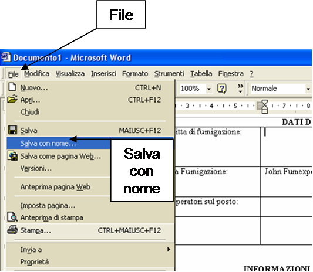
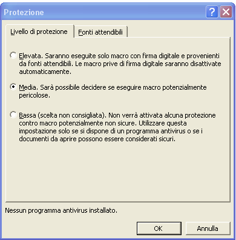

Esportazione dei dati Fumiguide ed elaborazione dei rapporti di fumigazione
La Fumiguide permette all’utente di esportare le informazioni sotto forma di file di testo, che può quindi essere aperto in MS-Word usando uno specifico modello di rapporto. Una volta aperto il file ProFume Fumiguide desiderato, per generare un rapporto di fumigazione bisogna cliccare su "File" e quindi su "Esporta".

E seguire le informazioni del file "Fumiguide Report.dot". Questa operazione richiede solo pochi secondi.

Dopo aver controllato o modificato il rapporto, potete salvare il file cliccando su "File" nel Top Menu e selezionando "Salva con nome".

All’apertura della finestra "Salva con nome" digitate il nome attribuito al file nella casella "Nome file"L.

L'eventuale mancata MS-Word potrebbe essere dovuta ad un'impostazione troppo alta della funzione Sicurezza Macro.Per modificare l’impostazione
Sicurezza Macro del documento MS-Word cliccare su Strumenti, poi Macro e quindi
Sicurezza.

Si raccomanda di selezionare il livello Medio che permette di attivare o disattivare le macro come descritto precedentemente.
